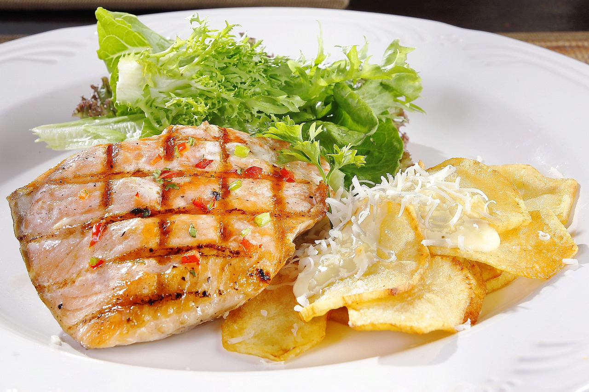
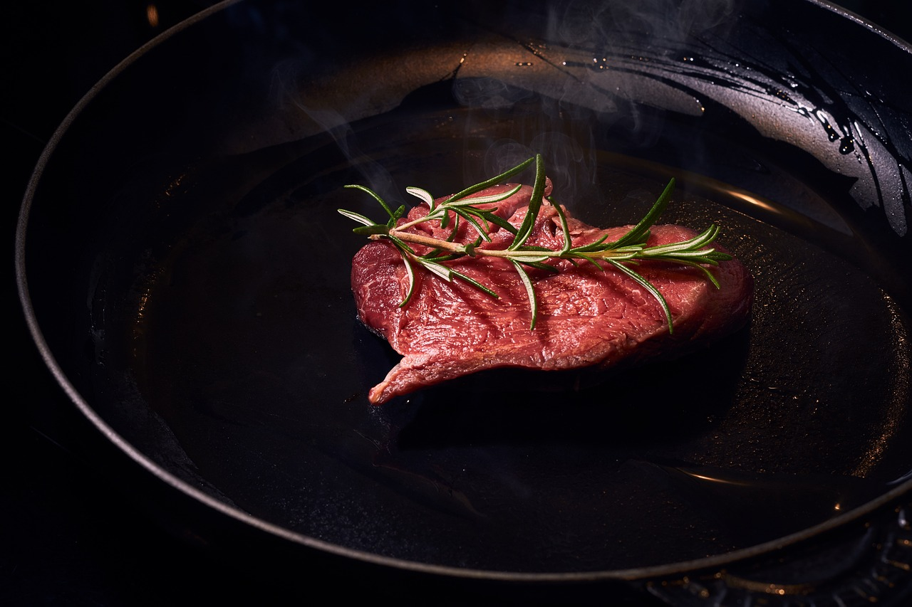
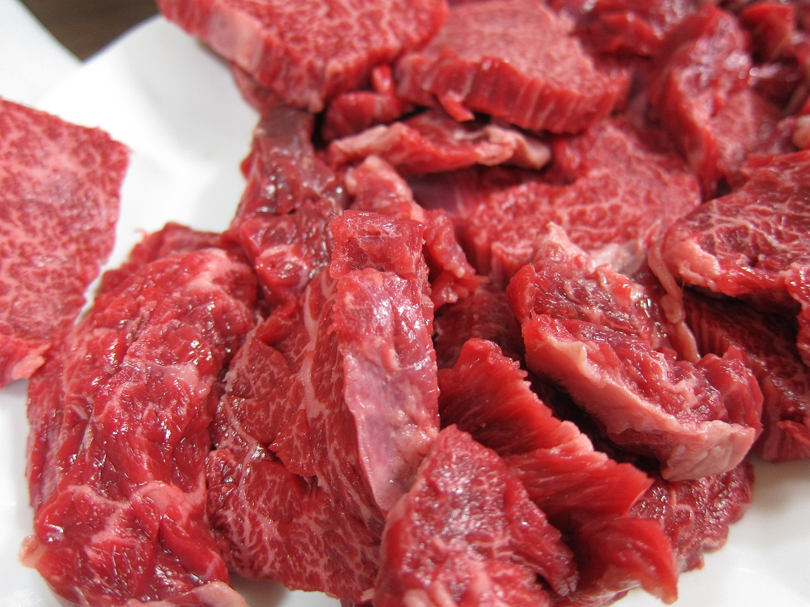
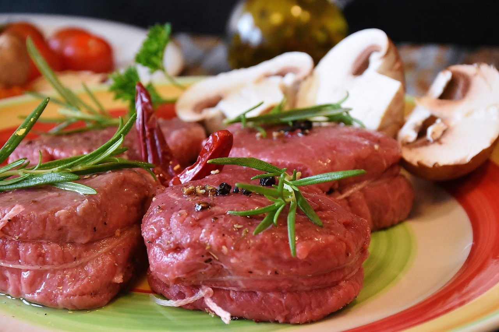
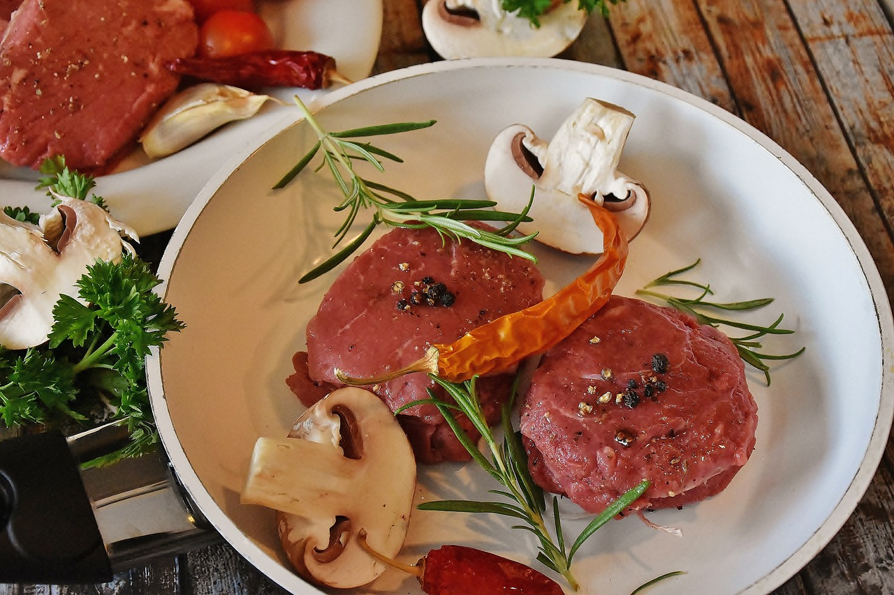

PLATO PRINCIPAL
Entrantes
Postres
<-- Inicio
SALMÓN AL HORNO CON PATATAS Y VERDURAS

- Tiempo: 60 min.
- Para: 4 personas
| Ingredientes | Cantidad |
|---|---|
| Lomo de salmón | -->2 |
| Patatas | -->4 |
| Tomates maduros | -->2 |
| Cebolla | -->1 |
| Vino blanco | -->un chorro |
| Aceite de oliva | -->un chorro |
| Sal y pimienta | -->al gusto |
Paso 1: Empezamos pelando y preparando los ingredientes que vamos a utilizar. Pelamos las patatas y las cortamos en láminas de un centímetro de grosor, aproximadamente. Pelamos y cortamos los tomates en láminas finas. Cortamos la cebolla y el puerro en juliana. Pelamos y cortamos la zanahoria en láminas.
Paso 2: En una sartén, con abundante aceite freímos las patatas. Que no queden muy crujientes, ni doradas, porque las vamos a terminar de cocinar al horno.
Paso 3: Precalentamos el horno a 180° C.
Paso 4:Una vez estén listas las patatas, las ponemos en la bandeja de horno formando una cama. Salamos. Ponemos los tomates en rodajas sobre las patatas y echamos un poco de sal.
Paso 5:Introducimos la fuente con las patatas y el tomate al horno. Lo tendremos a 180°, con calor arriba y abajo, durante 15 minutos o hasta que el tomate se aplaste bien con el tenedor. Cuando esté listo, lo sacamos y reservamos.
Paso 6:En una sartén, echaremos un chorro de aceite de oliva virgen extra. Cuando esté templado añadimos la cebolla, el puerro, la zanahoria y una pizca de sal. Lo tendremos a fuego medio, hasta que la cebolla y el puerro estén transparentes, y la zanahoria esté tierna. Colocamos el sofrito sobre la cama de tomates y patatas y reservamos un poco para poner sobre el salmón.
Paso 7:Salpimentamos el salmón y lo colocamos sobre los ingredientes que ya están dispuestos en la fuente de horno. Sobre el salmón ponemos el sofrito que habíamos reservado.
Paso 8:Como la carne de pescado es tierna de por sí, no se requiere una larga cocción al horno. Pero cuidado, dependiendo del tamaño de la pieza de pescado, en nuestro caso, del salmón, variarán los tiempos. Si la pieza es grande, podemos bajar la cocción a 180° C, aumentando su tiempo de horneado. Si las piezas son más pequeñas y finas, aumentaremos la temperatura hasta 200° o 230° C, y reduciremos el tiempo de horneado.
Paso 9:Por último, echamos un chorro de vino blanco sobre el pescado y lo metemos en el horno a 200° C. Con temperatura calor arriba y abajo, unos 20 minutos o hasta que al abrir el lomo de salmón, este no esté crudo. No os paséis de tiempo, no queremos que el pescado nos quede seco, lo queremos en su punto.
SOLOMILLO A LA BULGARA
 - Tiempo: 60 min.
- Para: 5 personas
| Ingredientes | Cantidad |
|---|---|
| Solomillo de ternera | -->2kg |
| Pimiento verde y rojo | -->2 de cada |
| Cebolla grande | -->2 |
| Tomate maduro | -->4 |
| Sal y pimienta | -->al gusto |
| Aceite de oliva | -->1 vaso |
Paso 1:En esta receta vamos a introducir un nuevo termino, marinar: Conservar en crudo ciertos alimentos, especialmente pescado, con adobo de vino, vinagre, hierbas, especias,… a fin de que se ablanden y adquieran aroma. En fin, que es un proceso con el objeto de conservarlos, aromatizarlos o ablandarlos. Con esta técnica introducimos en la carne nuevos sabores a través de las hierbas y especias. Es muy importante no marinarla más de 1 día puesto que la carne se quedaría dura.
Paso 2:Una vez explicada un poco esta técnica, cortamos el solomillo en cuadrados iguales (no muy grandes, así absorberá con más rapidez el sabor del vino).
Paso 3:Lo marinamos durante 1 noche en un recipiente con vino tinto de buena calidad (un rioja le va muy bien), el aceite de oliva virgen extra (también tiene que ser de buena calidad), la pimienta negra y la sal (poca cantidad). Dejamos la carne en la nevera bien tapada.
Paso 4:Cortamos las cebolla en medias lunas, los pimientos en tiras largas y los tomates por la mitad. Sacamos la carne de la nevera y retiramos el caldo de marinar (que vamos a utilizar para cocinar).
Paso 5:Vamos a utilizar 2 cazuelas, en una introducimos la carne. Rectificamos de sal y la pasamos a fuego lento. En la otra cazuela pochamos la verdura, según Pepe (el autor de la receta), primero tenemos que cocinar la cebolla y cuando empiece a cambiar de color.
Paso 6:Añadimos los pimientos y sólo al final los tomates, rociando ambos con el caldo de marinar. Este proceso dura unos 15 minutos para la carne y una media hora para las verduras.
Paso 7:El último paso es juntar las verduras con la carne en una fuente y servir muy caliente.
TERNERA GUISADA CON SETAS
 - Tiempo: 30 min.
- Para: 2 personas
| Ingredientes | Cantidad |
|---|---|
| Setas | 300g |
| Carne de ternera | 400g |
| Cebolla | 2 |
| Huevos | 3 |
| Aceite de oliva | 100mL |
| Sal y pimienta | Al gusto |
| Perejil | Al gusto |
Paso 1: Poner una cazuela al fuego con unas cucharadas de aceite de oliva. Sofreír la ternera troceada. Añadir la harina. Remover con ayuda de una cuchara de madera, procurando que se dore, pero que no se tueste.
Paso 2:Pelar y cortar las cebollas en rodajas y las setas en trozos. Añadir las cebollas y las setas a la cazuela. Incorporar también el caldo de carne. Sazonar y dejar cocer a fuego lento hasta que la carne esté bien tierna.
Paso 3:Espolvorear con el perejil picado y retirar del fuego. Separar las claras de las yemas de huevo. Batir las yemas con un vasito de agua y, justo antes de servir, añadirlas a la cazuela para que se ligue bien la salsa.